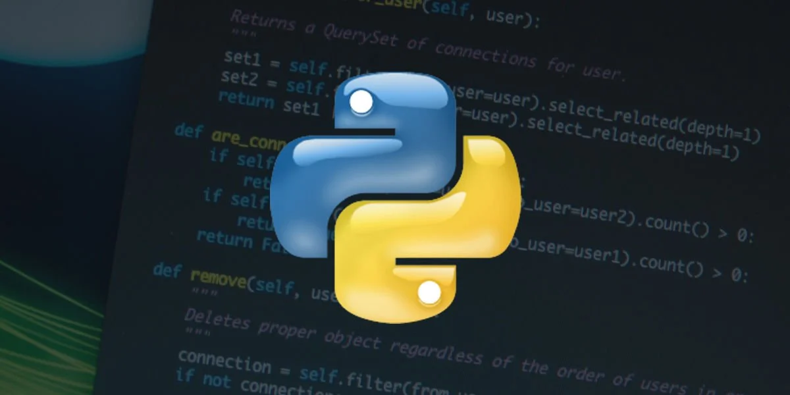
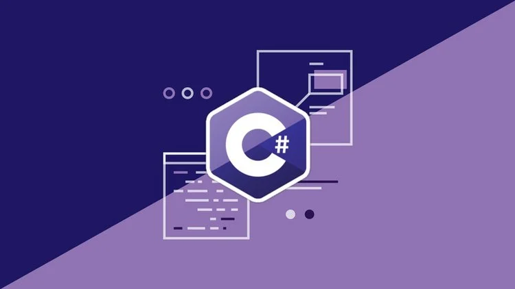

Popüler Yazılım Dilleri

Python
Python, okunabilirliği yüksek sözdizimi sayesinde hem başlangıç seviyesindeki geliştiriciler hem de profesyoneller tarafından tercih edilir. Veri bilimi, yapay zekâ ve web geliştirme gibi alanlarda çok etkilidir.

JavaScript
JavaScript, modern web'in dinamik yapısını sağlar. Front-end ve back-end'de kullanılır, etkileşimli kullanıcı arayüzleri ve gerçek zamanlı uygulamalar için vazgeçilmezdir.

C#
C#, oyun geliştirme (Unity), masaüstü uygulamaları ve web servisleri için güçlü bir Microsoft dilidir. Nesne yönelimli yapısıyla sağlam çözümler sunar.